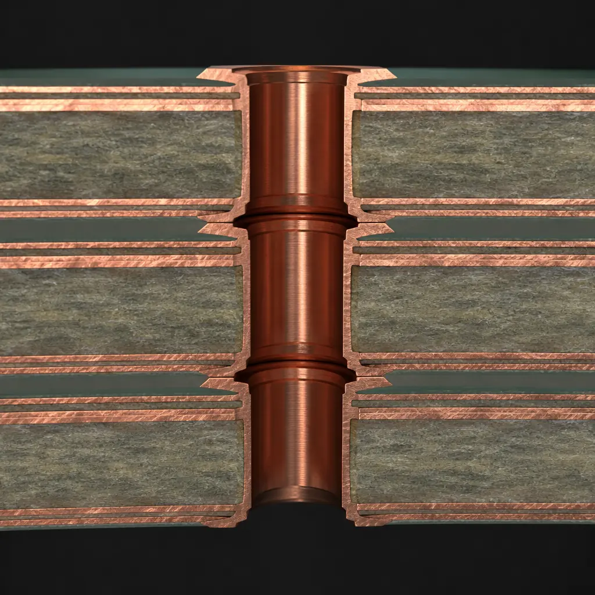
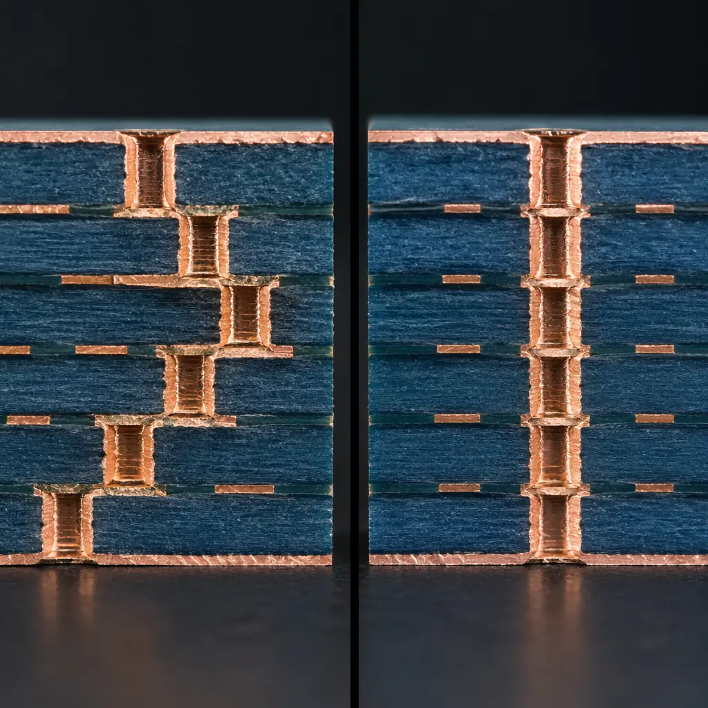
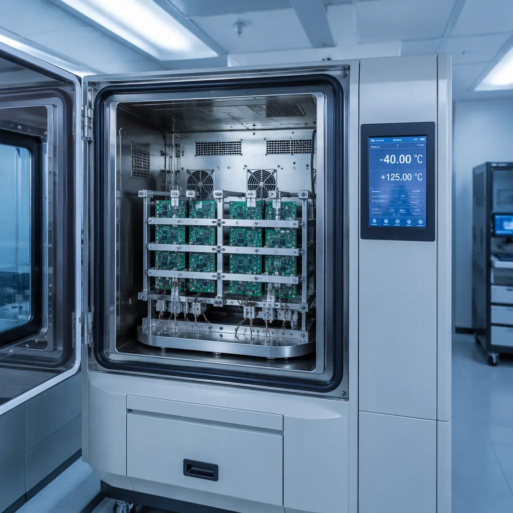
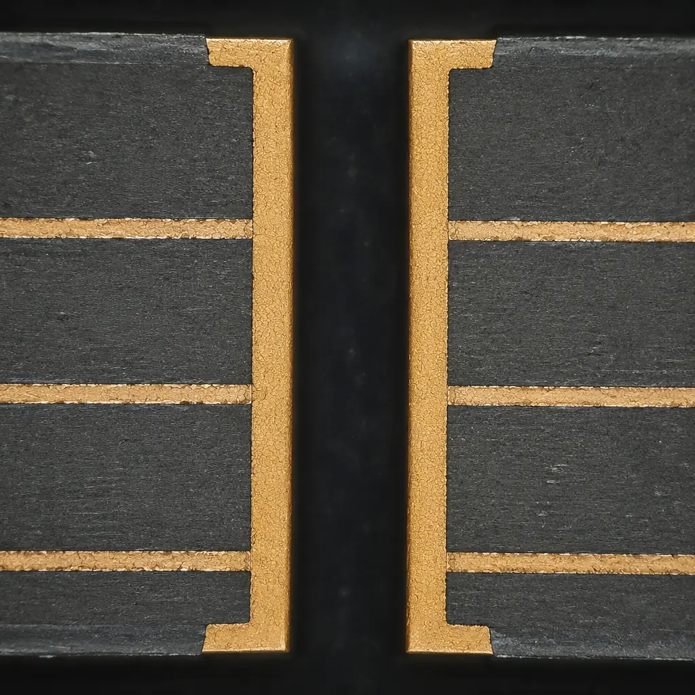

When a microvia fails, it doesn't fail gradually. It cracks. And when one microvia cracks in a high-density interconnect board carrying 2–32 layers of routing, the failure cascade can take down an entire assembly — often after the board has passed electrical test and been installed in the field. This is why microvia reliability isn't a manufacturing checkbox: it's a design decision with hard physics behind it.
At Huaxing PCBA, we manufacture HDI boards with 0.075 mm laser-drilled microvias across 8 SMT lines, qualified to IPC-A-610 Class 2 and Class 3 standards. Our IST (Interconnect Stress Testing) capability — the gold standard per IPC-TM-650 — gives our engineering team direct visibility into microvia integrity before boards ship. This article explains what procurement engineers, hardware designers, and quality managers need to know to specify microvia reliability correctly on an RFQ.

What Determines Microvia Reliability in HDI Boards
Microvia reliability is fundamentally a materials-and-thermomechanics problem. When a PCB cycles through reflow soldering — reaching peak temperatures of 245–260°C for lead-free alloys — every material in the stackup expands at a different rate. The resulting stress concentrates at the interfaces where dissimilar materials meet, and microvias, with their high aspect ratios and thin copper walls, are the most vulnerable structures on the board.
Three factors dominate microvia reliability. First, CTE mismatch between the copper plating (~17 ppm/°C) and the laminate material (typically 30–70 ppm/°C in the Z-axis for standard FR-4) drives cyclic tensile and compressive stress at the via barrel. This is compounded when the laminate is a high-Tg formulation with a sharp Z-axis expansion above its glass transition temperature. Second, the aspect ratio — the ratio of via depth to diameter — determines how uniformly copper plates into the hole. Aspect ratios above 1:1 for laser-drilled microvias begin to show non-uniform current density during electroplating, producing thin spots at the via knee where the barrel meets the capture pad. Third, the quality of the plating-to-target-pad interface determines whether the microvia separates cleanly from its landing pad under thermal stress or maintains a continuous metallurgical bond.
Stacked microvia structures introduce an additional failure mode: the interface between successive copper plating layers, separated by thin dielectric, must survive the same thermal excursions as the bulk copper. See our HDI technology guide for a broader overview of high-density interconnect architectures and their design trade-offs.
Key Takeaway: Microvia reliability is dominated by CTE mismatch, aspect ratio, and plating quality — not just the number of thermal cycles the board survives. A 0.1 mm laser via with a 1:1 aspect ratio and uniform 20–25 μm copper plating will consistently outperform a 0.075 mm via with a 0.8:1 ratio and 15 μm plating, even at the same reflow profile.
Stacked vs Staggered Microvias — When Each Makes Sense
The choice between stacked and staggered microvia configurations is not purely a reliability question — it's a density-versus-risk trade-off that every HDI design must navigate. A stacked microvia aligns vias vertically across multiple layers to create a continuous plated interconnect from an outer layer through multiple dielectric layers to an inner target pad. A staggered microvia offsets each via position so that no two vias sit directly on top of each other; each via lands on its own capture pad, and the electrical path zigzags through the stackup.

Stacked structures offer the highest routing density and the shortest electrical path, making them essential for any-layer HDI designs in smartphones, wearables, and advanced telecom modules where every micron of board real estate counts. But they demand more from the manufacturing process — each stacked via interface is a potential delamination site, and the cumulative Z-axis expansion across multiple dielectric layers amplifies stress at the stack base. Staggered structures, by contrast, spread mechanical stress across multiple offset interfaces. The cost is lower density and longer signal paths, but the reliability margin is significantly higher, particularly for boards destined for thermal cycling environments like under-hood automotive or industrial motor drives.
| Parameter | Stacked Microvias | Staggered Microvias |
|---|---|---|
| Reliability (Thermal Cycling) | Moderate — stress concentrates at stack base; typically 3–5 reflow cycles before degradation | Higher — stress distributed across offset interfaces; 6+ reflow cycles typical |
| Routing Density | Maximum — continuous vertical interconnect through multiple layers | Good — requires horizontal offset between layers, reducing available routing channels |
| Electrical Performance | Shortest path, lowest parasitic inductance | Slightly longer path; negligible for most sub-10 GHz applications |
| Layer Count Support | Best for 4–12 layer HDI with 2–3 stack levels | Scales easily to 16+ layers without cumulative stress issues |
| Manufacturing Complexity | Higher — requires sequential lamination cycles for each stack level | Moderate — fills and plating are simpler with offset landing pads |
| Relative Cost | 15–30% premium over staggered for equivalent layer count | Baseline — standard HDI cost structure |
| Best Application | Smartphones, wearables, any-layer HDI, RF modules | Automotive ECUs, industrial controls, aerospace, medical implants |
For most industrial and automotive HDI designs, a staggered configuration with one level of microvia stacking provides the best balance of density and reliability. If your design requires stacked microvias, specifying IST qualification up front — rather than relying on cross-section sampling alone — is the single most effective risk mitigation step. Our comprehensive via technology guide covers the full spectrum from through-hole to microvia structures.
IST (Interconnect Stress Testing) — The IPC-TM-650 Gold Standard
Interconnect Stress Testing, defined in IPC-TM-650 Method 2.6.26, is the most rigorous method available for qualifying microvia reliability in production. Unlike traditional thermal shock testing — which cycles an entire board between extreme temperature chambers — IST applies DC current directly through the interconnect network, using the copper traces themselves as resistive heating elements. This heats the test coupon from 25°C ambient to 150°C in under three minutes, then cools it back to ambient. Each cycle stresses every interconnect in the daisy-chain coupon identically, and the system monitors resistance in real time — a 10% resistance increase triggers a failure event.

IST Methodology: How the Test Actually Works
A dedicated IST coupon — typically a small PCB section containing representative microvia daisy-chain networks — is mounted in the test chamber. DC current is applied to a heating circuit embedded in the coupon design, raising the temperature from 25°C to 150°C at a controlled ramp rate. The coupon then cools passively (or with forced air) back to 25°C. Each full heat-cool cycle takes approximately 6–8 minutes. During cycling, the system continuously monitors the resistance of each interconnect chain — any chain showing a permanent resistance increase of 10% or more is flagged as a failure. The test runs until either a specified number of cycles is reached or failure occurs.
What Passing Looks Like: Cycles-to-Failure Benchmarks
There is no universal "pass" number — acceptance criteria depend on the performance class and application. For IPC-6012 Class 2 commercial electronics, surviving 100 IST cycles without a 10% resistance shift is a common baseline. For Class 3 high-reliability applications, 200+ cycles is typical, and automotive Tier 1 suppliers often specify 300–500 cycles with additional post-stress cross-section verification. The key metric is not just surviving the cycles, but showing no progressive degradation trend — the resistance should remain flat or show only minor fluctuations, not a gradual upward drift that signals incipient cracking.
IST vs Traditional Thermal Shock: Why IST Wins for Microvias
Traditional thermal shock testing (air-to-air or liquid-to-liquid) cycles entire boards between chambers at -40°C and +125°C, but the thermal mass of the board itself introduces a significant lag — it may take 10–15 minutes for the internal layers to reach chamber temperature. IST eliminates this lag by heating the copper directly. The result is a far more aggressive stress on the microvia interface specifically, producing failure data in hours rather than weeks. For production lot qualification, IST coupon testing at every lot provides statistical process control data that periodic cross-sectioning cannot match.
Procurement Tip: When reviewing a PCB supplier's IST capability, ask for their IST control chart data — not just a pass/fail report. A supplier running IST on every production lot will have SPC data showing mean cycles-to-failure, standard deviation, and any trending shifts. A supplier that only runs IST for "special qualification" builds has no statistical baseline — and no early warning of process drift. Huaxing PCBA maintains continuous IST SPC data across all HDI production lots.
IPC-6012 Qualification — Microvia Requirements by Performance Class
IPC-6012, the qualification and performance specification for rigid printed boards, defines three performance classes with escalating microvia acceptance requirements. Understanding the differences isn't just a quality exercise — it directly affects your cost, lead time, and the statistical likelihood of field failures in your application.

| Requirement | Class 2 (Dedicated Service) | Class 3 (High Reliability) | Class 3A (Military/Avionics) |
|---|---|---|---|
| Microvia Plating Thickness | Minimum 20 μm average, 18 μm at thin spot | Minimum 25 μm average, 20 μm at any point | Minimum 25 μm average, 20 μm at any point + tighter statistical Cpk requirement |
| Microvia Target Pad Capture | ≥ 50% of via diameter landing on target pad acceptable | ≥ 80% capture; no breakout allowed | 100% capture; zero breakout — every via fully on pad |
| Cross-Section Frequency | Per process control plan; typically 1 coupon per lot | 1 coupon per panel or per lot, all via types represented | 1 coupon per panel; all microvia stack levels sectioned |
| Thermal Stress (Solder Float) | 288°C, 10 seconds — no delamination or interconnect discontinuity | 288°C, 10 seconds — same requirement; additional IST testing strongly recommended | IST or thermal shock required; 288°C solder float is supplementary only |
| Microvia Void Acceptance | ≤ 25% of via volume per void; ≤ 2 voids | ≤ 15% of via volume; ≤ 1 void; no voids at stack interface | ≤ 10% of via volume; zero voids at any interface; any void at stack base = reject |
| Reflow Simulation (Preconditioning) | 3× reflow at 260°C peak before electrical test | 6× reflow at 260°C peak; IST after preconditioning | 6× reflow at 260°C peak + thermal cycling; IST + cross-section verification |
The jump from Class 2 to Class 3 is significant for microvia-heavy designs — particularly the void acceptance criteria at stack interfaces and the reflow simulation requirements. A board that passes Class 2 cross-section with minor voids at a stacked via interface may fail Class 3 outright when subjected to 6× reflow preconditioning. For medical, aerospace, and automotive applications where field failure is unacceptable, Class 3 qualification should be specified at the RFQ stage — retroactively qualifying a Class 2 design for Class 3 is rarely cost-effective. Read our detailed IPC class comparison for the broader context of what each performance class demands.
How to Specify Microvia Reliability on Your RFQ
Most PCB RFQs specify layer count, material, and surface finish — and stop there. For HDI boards with microvias, that's not enough. A well-specified RFQ tells the manufacturer exactly what reliability evidence you need before they ship, and it tells your own quality team exactly what to inspect upon receipt. Here's what to include.
IST Requirement: Specify Cycles and Acceptance Criteria
Don't just write "IST testing required." Write: "IST per IPC-TM-650 2.6.26, 150°C ambient-to-peak, 200 cycles minimum, ≤ 10% resistance increase on all daisy-chain nets. Provide SPC control chart with mean, UCL/LCL, and Cpk for last 10 production lots." If your application is automotive or aerospace, bump cycles to 300 minimum and request post-IST cross-section on worst-performing coupons. The specificity tells the factory this isn't a checkbox exercise — you understand the test and will review the data.
Acceptance Criteria: IPC-6012 Class and Microvia-Specific Addenda
State the performance class explicitly (Class 2, 3, or 3A) and add microvia-specific requirements that may exceed the baseline: "IPC-6012 Class 3 with the following microvia addenda: (a) zero voids at any stacked via interface, (b) minimum 22 μm copper at via knee, (c) 100% target pad capture for all laser vias." These go beyond what Class 3 strictly requires but are common for medical and defense work. If your supplier can't meet them, you want to know before tooling starts. See our PCB materials guide for how laminate selection interacts with microvia plating quality.
Cross-Section Frequency and Reporting
Specify the minimum cross-section sample plan: "One microsection coupon per panel, covering all microvia stack levels and both staggered and stacked structures (if both used). Provide photomicrographs at 200× and 500× magnification with plating thickness measurements at barrel center, knee, and base of each via type." If your supplier ships cross-section reports as a PDF attachment to the Certificate of Conformance, you want those images to be high enough resolution to actually verify copper thickness at the knee — the most common failure initiation point. Our failure analysis guide shows what real microvia failure modes look like under a microscope.
Laminate and Stackup Documentation
Request the full materials declaration for each dielectric layer in the microvia stackup, including resin system, glass style, and Tg/Td values. The CTE mismatch that drives microvia failure is a function of the specific laminate, not just the generic material family. A high-Tg FR-4 from one supplier can have dramatically different Z-axis expansion than another supplier's nominally equivalent material. "Provide per-layer material datasheet with Tg (DMA), Td (5%), and Z-axis CTE (50–260°C) for all dielectrics in the microvia stackup." For more on material selection, see our laminate selection guide and our stackup design reference.
Procurement Reality Check: A factory that can provide IST SPC data, IPC-6012 Class 3 microvia cross-sections with measured plating thickness, and full laminate traceability for every production lot is operating at the top tier of HDI manufacturing. Huaxing PCBA runs IST on every HDI production lot, maintains full material traceability back to laminate manufacturer lot numbers, and provides photomicrographs at 200× and 500× magnification as standard with Class 3 shipments — not as an extra-cost option.
Specify Reliability Before You Need It
Microvia reliability is not something you inspect into a board — it's something you specify into the procurement process. The difference between a board that survives 500 thermal cycles and one that cracks at 50 is decided at the RFQ stage, in the laminate selection, the via structure choice, and the qualification requirements you communicate to your manufacturer.
At Huaxing PCBA, we manufacture HDI boards from 2 to 32 layers with laser-drilled microvias down to 0.075 mm, supported by in-house IST testing per IPC-TM-650, cross-section analysis, and full IPC-6012 Class 2 and Class 3 qualification. Our 8 SMT lines deliver 8 million solder joints per day, backed by ISO 9001, IATF 16949, and UL (E354321) certifications. Read our supplier audit checklist or contact our engineering team to discuss your microvia reliability requirements before your next HDI project.